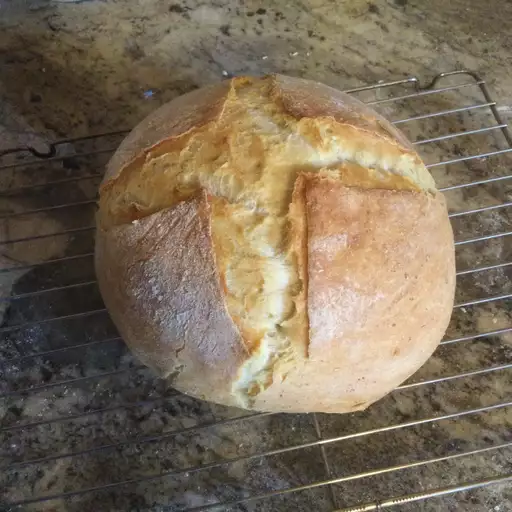

Crusty Dutch Oven Bread

Recipe by Stacey, recipe and photo sourced from https://www.allrecipes.com/recipe/281201/crusty-dutch-oven-bread/
Description
An incredibly easy, crusty white bread cooked inside a Dutch oven.
A forgiving and tasty recipe for bread baking beginners.
Electric stand mixer and dutch oven required
Ingredients
- 4 cups bread flour
- 1 1/2 cups water
- 2 teaspoons salt
- 1 teaspoon dry active yeast
Steps
-
Pour bread flour into the bowl of an electric stand mixer and add water, followed by salt.
Sprinkle yeast over the surface and allow to dissolve, about 5 minutes.
-
Mix on medium speed using the paddle attachment until the dough comes together.
Replace the paddle with a dough hook. Continue mixing until dough is smooth and elastic, about 10 minutes.
- Cover the bowl with plastic wrap and allow to the dough to rise to about twice its size, 30 to 45 minutes.
Push a finger into the dough. The dough should give some resistance, but not spring back.
If it springs back, let it rise longer.
-
Turn dough out onto a floured surface and punch down to expel excess gas and redistribute the yeast.
Cover with a clean dish towel and let rest for 10 to 15 minutes.
-
Shape the dough into a boule by pushing back and forth on the counter in a circular motion until you have a round, smooth ball.
Cover dough with a clean dish towel and allow to rise, about 1 hour.
-
Preheat the oven to 450 degrees F (230 degrees C). Grease a Dutch oven.
-
Slice a very shallow "X" into the top of the bread with a sharp knife to help it expand while baking.
Place loaf into the prepared Dutch oven and cover with the lid.
-
Bake in the preheated oven for 10 minutes. Reduce temperature to 375 degrees F (190 degrees C) and continue to bake, covered, for 20 minutes.
Remove the lid and continue baking until deep golden, 25 to 30 minutes.
Go to the top of this page
Return to the home page